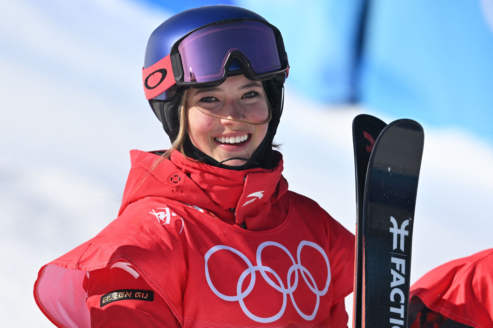

Green, Gold, and Cardinal: My Friend Eileen
February 27, 2023

My phone pings as my friend Eileen Gu’s name flashes on the screen. Fall quarter is just days away. And Eileen is about to begin freshman year at her dream school, Stanford University.
Earlier this year, at the 2022 Beijing Winter Olympics, Eileen won two gold medals in Big Air and Halfpipe, becoming the youngest freestyle skiing Olympic champion. The world knows her as the teenage Olympic sensation and international model on the front cover of fashion magazines like Vogue. To me, she’s still Eileen from 15 years ago, in first-grade at our small all-girls private school, nestled into the perpetually foggy Sea Cliff hills of San Francisco.
My phone pings again. Eileen has a whirlwind of questions, an ironic flip of the roles from the incessant questions that she’s usually peppered with from reporters. Like any 18-year-old about to transition to college, Eileen is a jumble of emotions. She’s anxious about making friends but excited for the full college experience.
For someone who grew up in an individual sport, college tennis offered something revolutionary: the chance to play for something bigger than herself. That pride— representing her teammates, her school, and the Gator logo stitched on her shirt—is what fuels Duabnerova.
“What’s the athlete scene?” reads her text. “Any class recommendations?” And most importantly, she wants to know how she can access the highly coveted athlete-dining hall. Stanford athletic administrators are giving her push back, because she’s technically not a Stanford Varsity-Athlete, just a two-time Olympic gold medalist.
I start typing my reply, excited we’re going to be classmates again. My mind drifts back to Eileen and I wearing oversized, green plaid jumper uniforms, two lanky “lower-schoolers” at Katherine Delmar Burke’s School.
Burke’s was a place to dream big. Pulitzer Prize-winner Jennifer Egan and tennis sensation CiCi Bellis were Burke’s girls. Even among such distinguished alumni, Eileen’s name shines. Burke’s was a place where Eileen, an only child who grew up next door to Burke’s, spawned dreams of one day becoming president, an astronaut, a Nobel-winning physicist, and perhaps most pertinently, a professional athlete.
She played basketball, soccer, and ran cross-country. Her classmates never knew she was trekking to Tahoe each weekend for ski team. She was reserved, quiet and blended in among the sea of green uniforms and pig-tails.
Eileen and I had a healthy rivalry. We ran cross-country, but I never saw her in a race because she was always far behind me. Similarly, she followed me at piano, playing the same songs I played but one year later. As I watched her win gold at the Olympics, I thought, Gosh, I should have taken up freestyle skiing. I might be winning gold too! Her mother, Yan, never missed a cross-country meet or piano concert, enjoying the serenity of her accomplished daughter gracefully playing the keys. With freestyle skiing, Yan is too scared to watch Eileen compete. Instead, she shuts her eyes and says a prayer.
Sitting in her living room, a view of the Golden Gate Bridge in the window, Yan reflects on her daughter. “The passion always came from Eileen, I never pushed her towards something she didn’t enjoy. She’s doing what she loves.” It was Yan, a skier herself, who introduced Eileen to skiiing and made the arduous drives to Tahoe.
Eileen’s mother and grandmother are central figures in her life. Laughing, Eileen recalls a race in eighth-grade, when her Chinese grandmother, who doesn’t speak English, somehow mobilized a troop of Kate-spade carrying mothers to cheer “Eileen, Number One.” Eileen describes the two as “polar opposites and the same individual. Where my mom is measured and rational, my Grandma propounds outrageous statements with the utmost confidence. My grandma pushes me to dream big, while my mom keeps me rooted and realistic. Both are absolutely integral to my success thus far.”
~ ~ ~
Three months into the school year, Eileen and I catch-up as we walk the Dish Trail, overlooking the distinctive burnt red rooftops of Stanford’s 8,000 acre campus. She’s wearing a black zip-up with her name E. Gu printed on the front. Her blond highlights, gold like her medals, shine underneath her signature Red Bull visor.
She talks about her Red Bull sponsorship, and how they send her truck-loads of Red Bull, which she gives to friends because (full disclosure) she doesn’t drink Red Bull. We laugh about our scary fifth-grade French teacher who handed out detention slips if our uniforms were an inch above our knees. She’s still the easygoing Eileen, and you forget you’re talking with Eileen Gu: skiing phenom, modeling icon. But then, she nonchalantly mentions attending the Met Gala, taking pictures on the red carpet with Bella Hadid. And then a hiker we pass perks up. “Are you Eileen Gu??!” She patiently answers their questions and poses for a picture. A composed pro, no traces of the shy elementary school girl.
She’s still adjusting to college life. “It’s like working three full-time jobs—fashion, school, and skiing,” she says. Every Friday, she makes the same trek to Tahoe. But now, she flies private. And sometimes, instead of Tahoe, she’ll jet to Paris for Fashion Week or to Austria for training.
Her final Olympic event was risky because she pulled off a trick she had never tried in competition before. “It was something I've been journaling about since I was basically six-years-old.” Her last-minute decision didn’t surprise her long-time coach, Jaime Melton. “Skiers like Eileen are once in a generation,” says Melton, head coach of the Chinese National Big Air Team. “When Eileen is confident in something, I know she’s got it.”
~ ~ ~
We come down the trail, strolling through the towering arches of the Main Quad, the California sunset igniting the sky electric shades of pink. I see Eileen smile, a proud emblem of Cardinal red, from the once signature forest green uniform of a Burke’s girl.
Where are we headed? The athlete-dining hall, of course. Eileen’s a regular there now, and tonight, the chef is preparing a special Chinese dish to honor her heritage, something she holds close to heart. It’s another aspiration—to inspire Chinese girls to break boundaries and follow their dreams.
And who’s stopping her? It seems her career is just beginning. Two gold medals? She’s just scratching the surface.